ML intro
Machine Learning Basics¶
-
Machine learning: (part of ML techniques) learning a predictive model from data
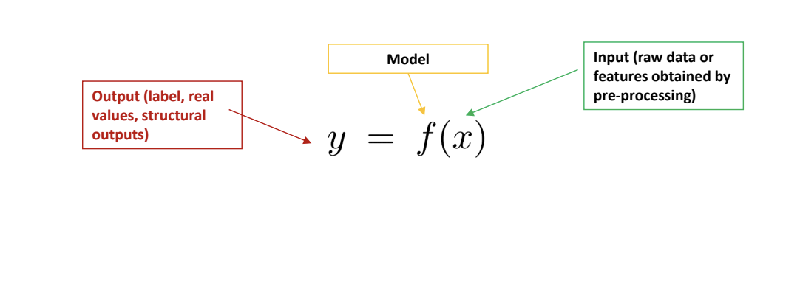
-
An example:
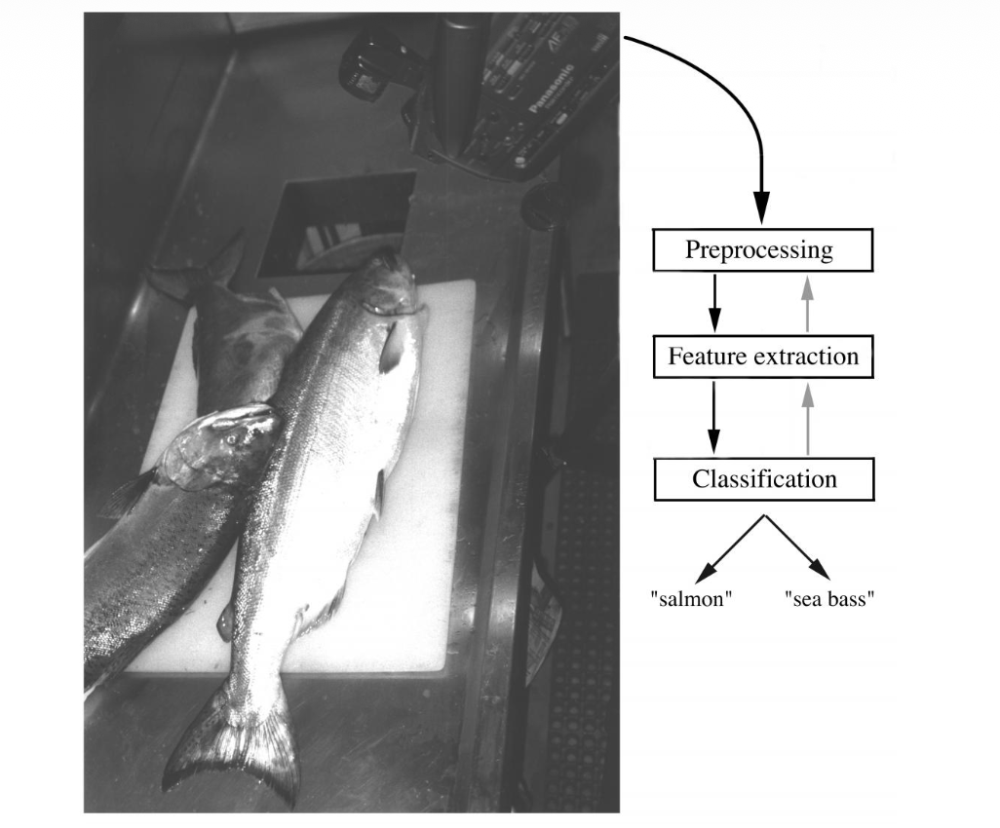
The objects to be classified are first sensed by a transducer (camera), whose signals are preprocessed. Next the features are extracted and finally the classification is emitted, here either "salmon" or "sea bass". Although the information flow is often chosen to be from the source to the classifier, some systems employ information flow in which earlier levels of processing can be altered based on the tentative or preliminary response in later levels (gray arrows) Yet others combine two or more stages into a unified step, such as simultaneous segmentation and feature extraction.Linear Classifier¶
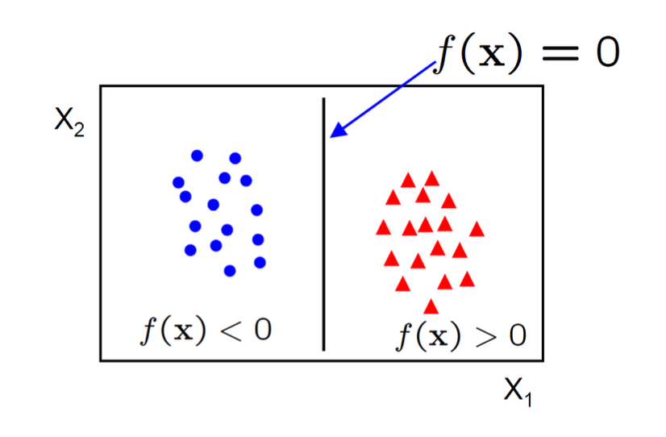
A linear classifier has the form $$ f(x)=W^Tx+b $$- in 2D the discriminant is a line
- W is the normal to the line, and b the bias
- W is known as the weight vector
Perceptron¶
In the modern sense, the perceptron is an algorithm for learning a binary classifier: a function that maps its input x (a real-valued vector) to an output value \(f(x)\) (a single binary value): $$ f(x)= \begin{cases} 1 \quad if \space w \cdot x + b > 0 \\ 0 \quad otherwise \end{cases} $$ where w is a vector of real-valued weights, \(w \cdot x\) is the dot product \(\sum\limits_{i=0}^mw_{i}x_{i}\), where m is the number of inputs to the perceptron and b is the bias. The bias shifts the decision boundary away from the origin and does not depend on any input value.
Multivariate Linear Regression¶
This time, \(x \in \mathbb{R}^m\) and \(y \in \mathbb{R}^k\) , and the model is $$ y = Ax $$ for a \(k \times m\) matrix \(A\) . We assume the last coordinate of each x vector is 1. Then the last column of \(A\) acts as the bias vector \(b\) we had before, simplifying the model. The empirical risk is
We want to optimize \(L\) with respect to the model matrix \(A\), so this time we need a gradient:
$$ \nabla_{A} L = 0 $$ We are treating the loss as a function \(L(A)\) of the matrix \(A\) (fixing x's and y's):
The gradient of the loss is
$$ \nabla_{A}L = 2A \sum\limits_{i=1}^{N} x_{i}x_{i}^T - 2 \sum\limits_{i=1}^{N} y_{i}x_{i}^T = 0 $$ Which we can write as
$$ 2AM_{x x} - 2M_{yx} = 0 $$ where \(M_{x x} = \sum\limits_{i=1}^{N}x_{i}x_{i}^T\) and \(M_{yx} = \sum\limits_{i=1}^{N}y_{i}x_{i}^T\)
The solution for zero loss gradient:
$$ \nabla_{A}L(A) = 2A M_{x x} - 2M_{yx} = 0 $$ is:
$$ A = M_{yx}M_{x x}^{-1} $$ Also works if we define
These are called sample moments , and they converge to the true moments
So our empirical risk-minimizing model \(A = M_{yx}M_{x x}^{-1}\) converges to the true risk minimizing model \(A_{0} = \mu_{yx}\mu_{x x}^{-1}\)
Aside: Gradients¶
when we write \(\nabla_{A}L(A)\), we mean the vector of partial derivatives:
Where \(\frac{ \partial L }{ \partial A_{11} }\) measures how fast the loss changes vs. change in \(A_{11}\) .
When \(\nabla_{A}L(A)=0\) , it means all the partials are zero.
i.e. the loss is not changing in any direction. Thus we are at a local optimum (or at least a saddle point)
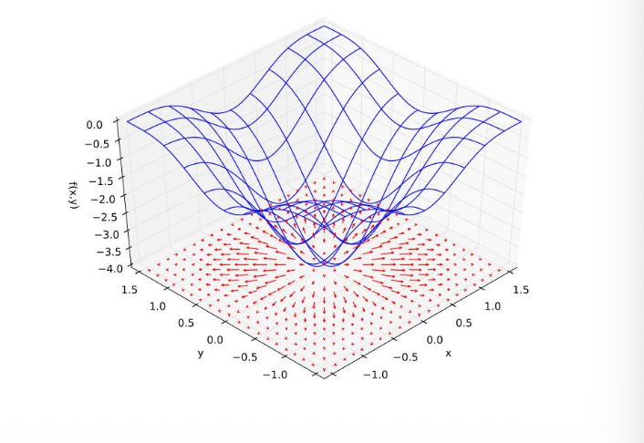
Support Vector Machine¶
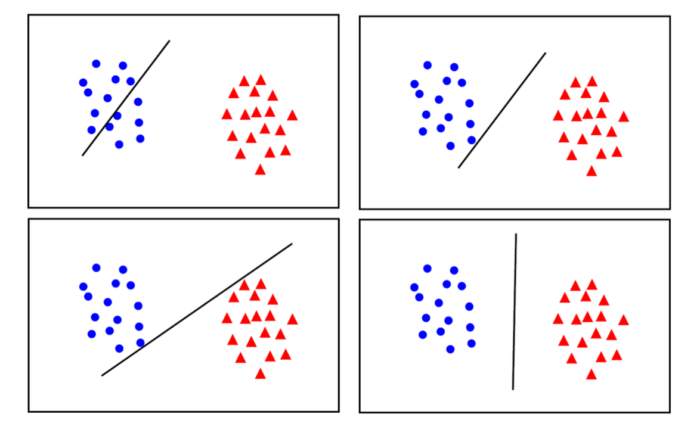
-
maximum margin solution: most stable under perturbations of the inputs
-
Distance from example to the separator is
- Example closest to the hyperplane are support vectors .
- Margin \(\rho\) of the separator is the width of separation between support vectors of classes
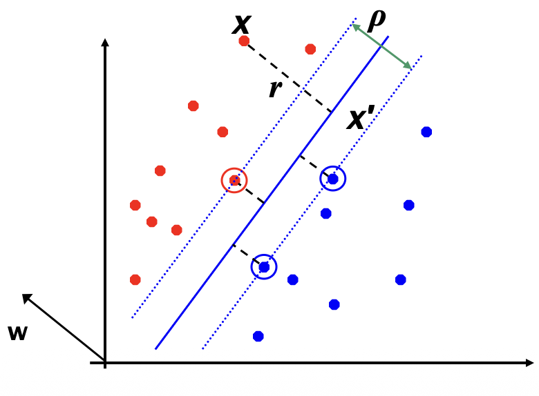
Derivation fo finding r: Dotted line x' -x is perpendicular to decision boundary so parallel to w. Unit vector is w/|w|, so line is rw/|w|. x' = x - yrw/|w|. x' satisfies w^T x' + b = 0. So w^T (x - yrw/|w|) + b = 0 Recall that |w| = sqrt(w^T w). So w^T w - yr|w| + b = 0. So, solving for r gives: r = y(w^T x + b) / |w|- Since \(w^T x + b = 0\) and \(c(w^T x + b) = 0\) define the same plane, we have the freedom to choose the normalization of \(w\)
- Choose normalization such that \(w^Tx_{+} + b = +1\) and \(w^Tx_{-} + b = -1\) for the positive and negative support vectors respectively
- Then the margin is given by
Optimization of SVM¶
- Learning the SVM can be formulated as an optimization:
$$ \max\limits_{w} \frac{2}{||w||} $$ subject to
$$ w^T x_{i} + b \begin{cases} \geq 1 \quad if \space y_{i} = +1 \\ \leq -1 \quad if \space y_{i} = -1 \end{cases} $$ for \(i = 1\dots N\)
- Or equivalently
subject to
$$ y_{i}(w^{T}x_{i} + b) \geq 1 $$ for \(i = 1\dots N\)
- This is a quadratic optimization problem subject to linear constraints and there is a unique minimum
Tradeoff of Linear Separability / Large Margin¶
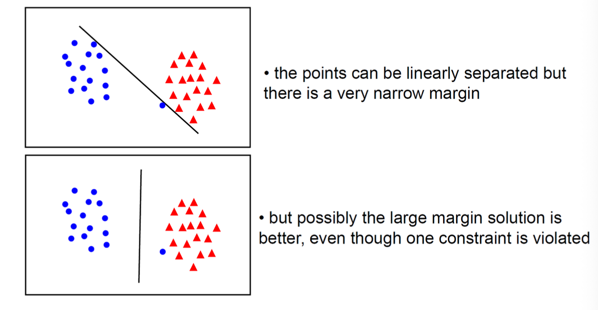
In general there is a trade off between the margin and the number of mistakes on the training data
Soft-Margin Support Vector Machine¶
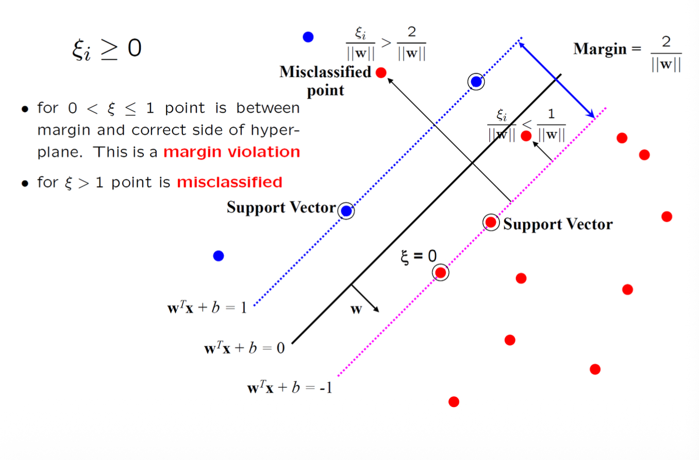
The optimization problem becomes
subject to
- Every constraint can be satisfied if \(\xi_{i}\) is sufficiently large
- \(C\) is a regularization parameter:
- small \(C\) allows constraints to be easily ignored \(\to\) large margin
- large \(C\) makes constraints hard to ignore \(\to\) narrow margin
- \(C = \infty\) enforces all constraints: hard margin
- This is still a quadratic optimization problem and there is a unique minimum. Note, there is only one parameter, \(C\) .
Basics of Deep Networks¶
XOR Problem¶
Single-layer cannot solve XOR
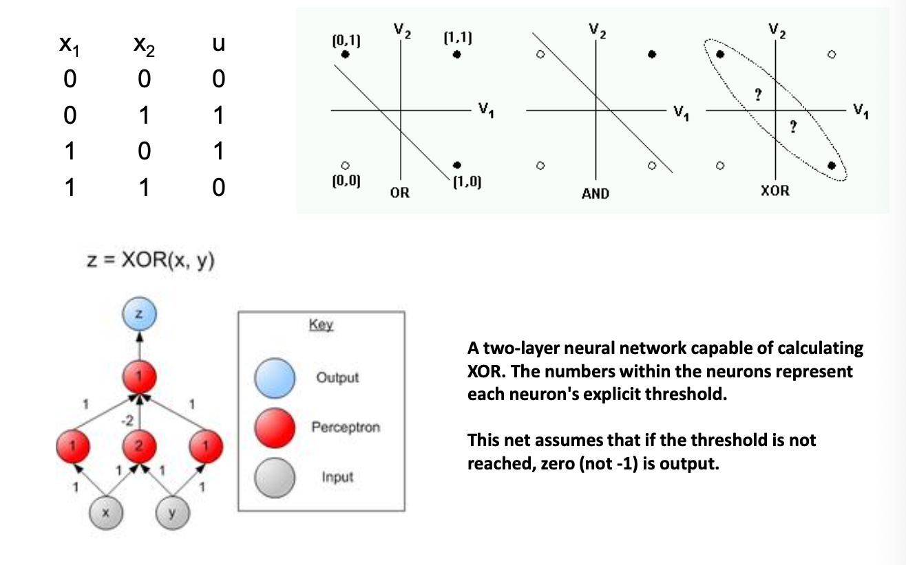
Gradient and Chain Rule¶
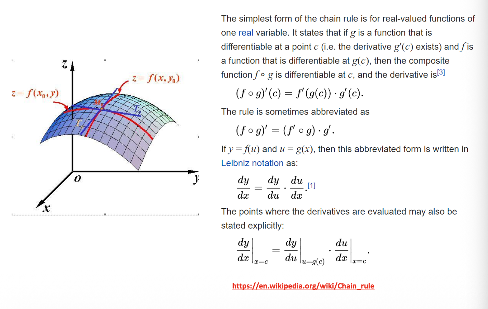
Back Propagation¶
Anatomy for a unit neuron
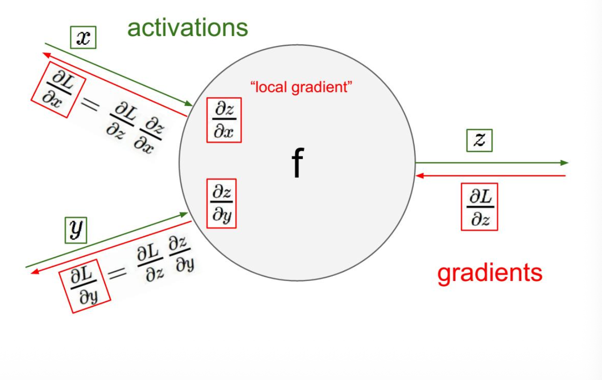
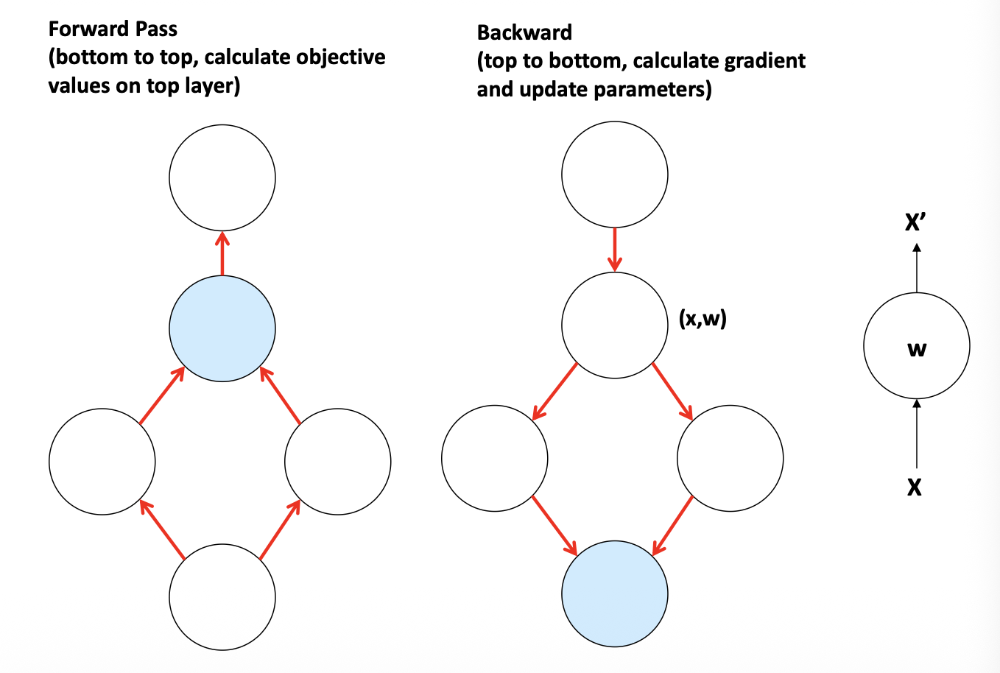
LeNet-5: An Exceptional Example¶
- Supervised deep networks are too difficulty to train (before 2012)
- LeNet-5 is an exception
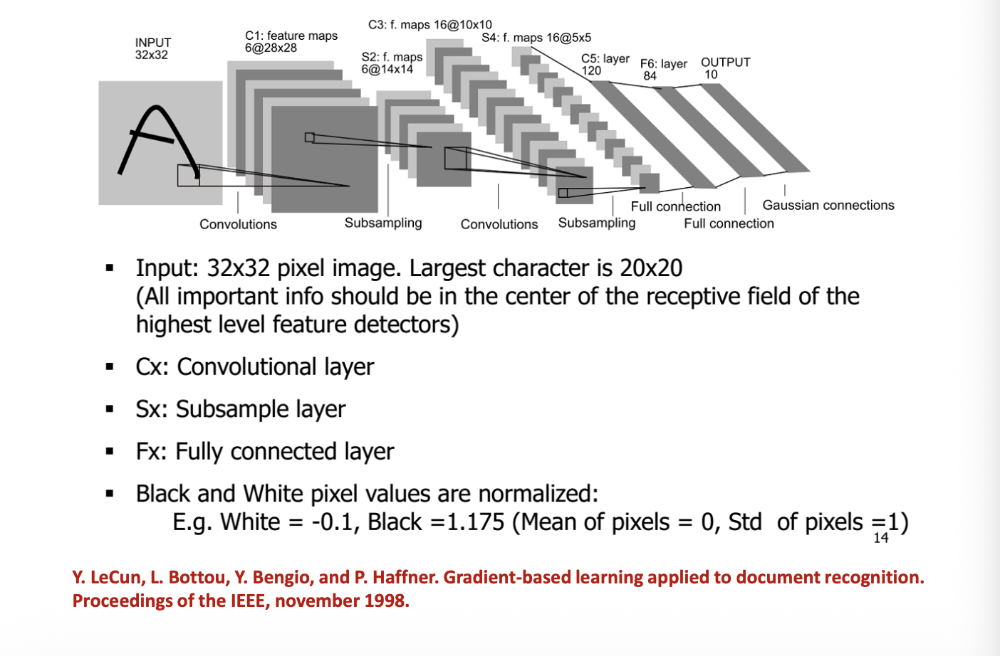
确立了现代CNN的基本结构——卷积层、池化层、全连接层的组合
LeNet-5 的名字中的“5”意味着它包含5层可训练参数的层（3个卷积层 + 2个全连接层）。其输入是32x32的灰度图像，输出是10个类别（数字0-9）的概率。
总参数量：约 60,000 ；总连接数：约 340,000 。
The Activation Functions¶
- Twist the linear responses
- Avoid numerical overflow
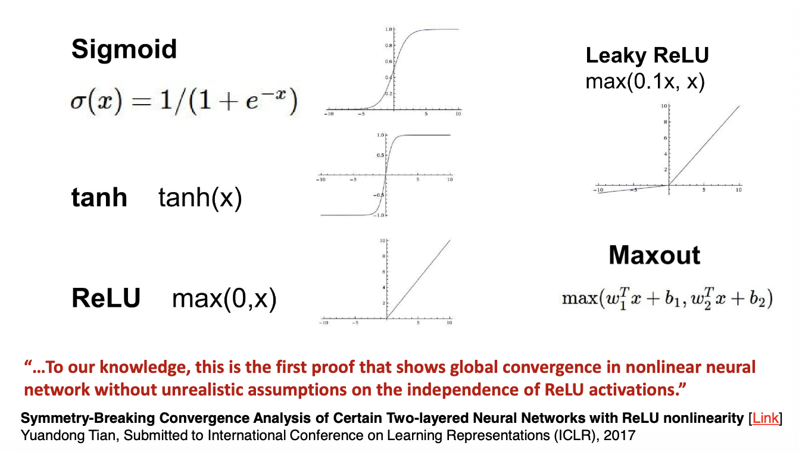
Softmax Layer¶
Generate probabilistic output
Regularizing Networks: Dropout¶
- Keeping a neuron active with some probability
- Only in training mode, scaling the weights accordingly
- Google applied for a US patent for dropout in 2014
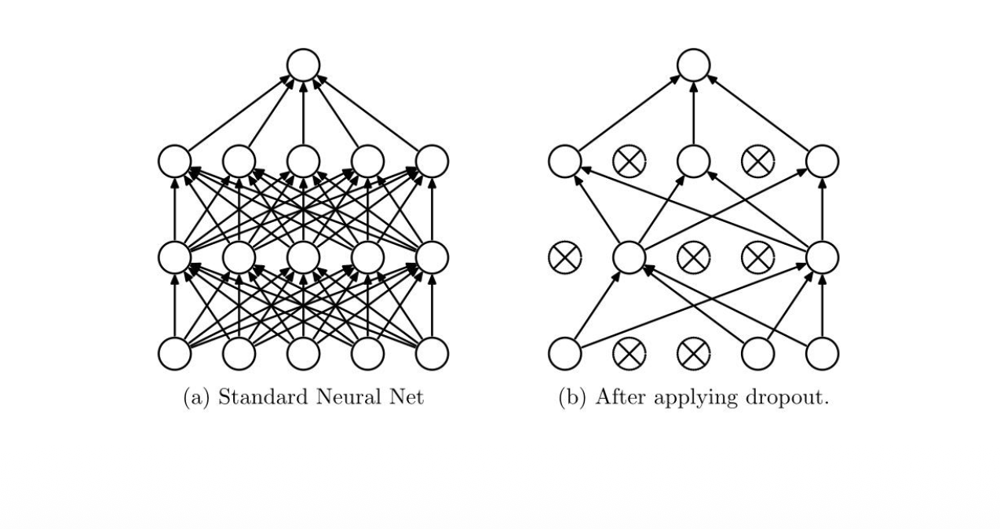
Momentum and Weight Decay¶
- The objective often has the form of a long shallow ravine leading to the optimum and steep walls on the sides
- SGD tend to oscillate across the narrow ravine
SGD:
Momentum:
- Weight decay: limit the number of free parameters in your model so as to avoid over-fitting
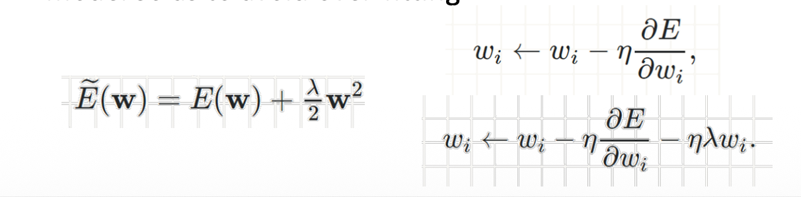
Regularizing Networks: Early Stopping¶
- Training error decreases steadily over time, but validation set error begins to rise again
- We should adopt Early Stopping!
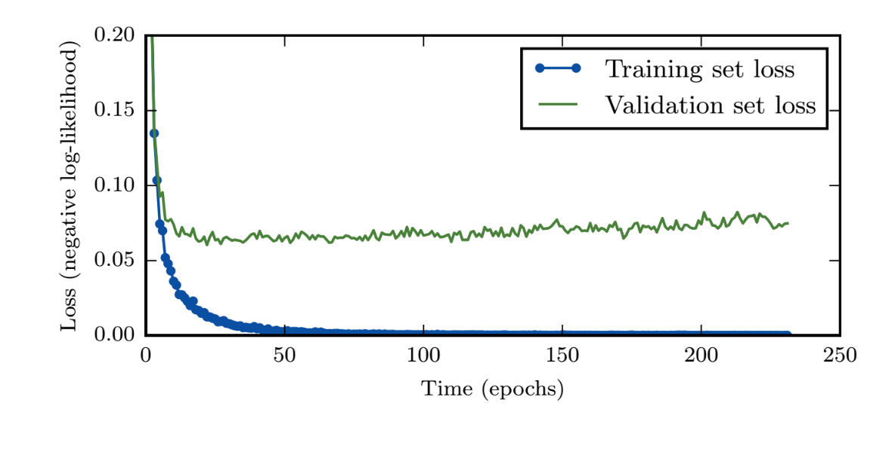